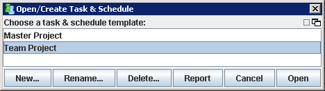
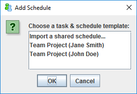

Conditional: Add Member Schedules to Team Schedule (Team Leader)
This step will normally be unnecessary, because member schedules are
usually added to the team schedule automatically as they join the project.
Certain unusual circumstances (for example, an individual joining a project
twice, or deleting and manually recreating their personal EV schedule) may
interfere with this automatic operation. When a problem occurs, an
individual's personal schedule may not appear in the team rollup, and you may
see "Task List Missing" errors. You can resolve such problems by following
these steps:
- Make certain that the individual has
successfully exported their project data. Ask the individual what
name they gave their earned value schedule. (This is normally
the same as the name of the project, but individuals sometimes choose
a different name.)
- Open the Team Dashboard if it is not
already running. Import all team data.
- In the Team Dashboard window, choose Task
and Schedule from the File menu. In the window that appears, select the
earned value schedule corresponding to your team project, and click
Open.

- In the window that appears, check to see
if there is an erroneous entry for this individual (i.e., an entry
highlighted in red with a "task list missing" error). If so,
highlight the erroneous entry, and click the Remove Schedule
button.
- Next, click the Add Schedule button. An
Add Schedule dialog window will appear.

- Look for an entry that starts with the
name the individual gave their earned value schedule, and ends with
their name in parentheses. Select that entry and click OK. If you
do not see an appropriate entry, ensure that the individual has
successfully exported their data, then import all team data and try
again.
- After successfully adding the
individual's schedule to the team schedule, click Save to save the
team schedule. You can then click the Close button to close the team
schedule window.